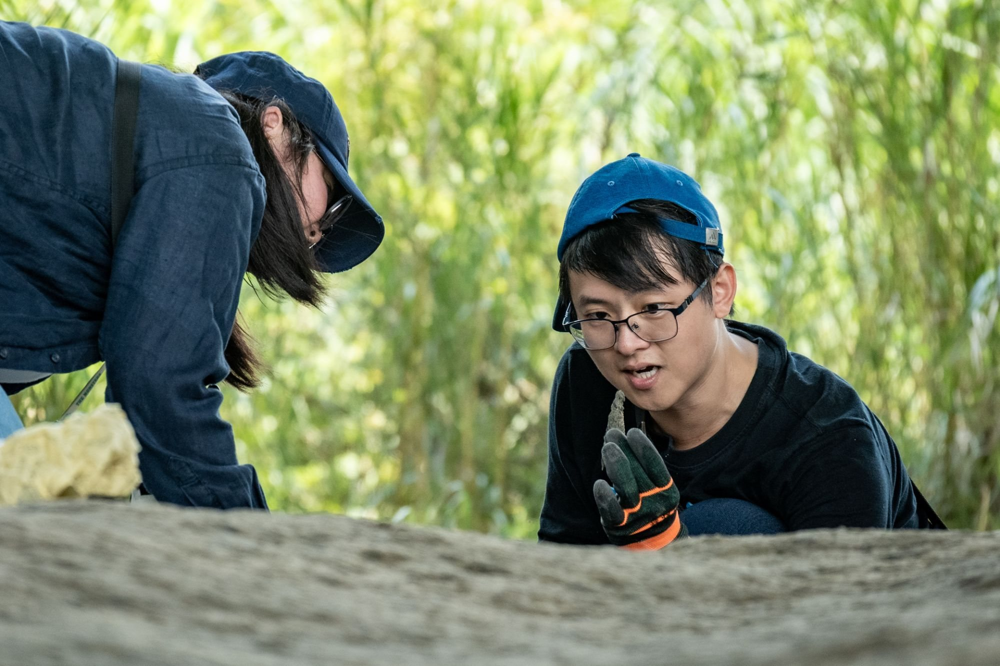
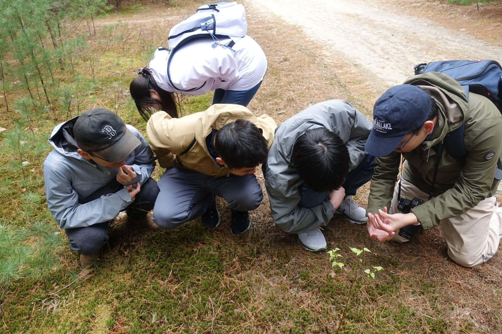

Recently, I was talking with a friend in industry about how companies respond when they need a new technical capability. His answer was surprisingly direct:
How one company prioritizes acquiring a new technical capability
If the company can build the capability itself, it does. If not, it buys the technology or acquires it externally. If that still does not solve the problem, it looks for a partner. And even then, startups are often more attractive collaborators because they tend to move quickly, work toward concrete outcomes, and have strong incentives to push things forward. Traditional university partnerships may come later.
Of course, this was one conversation, not a universal rule for how every company operates. But it made me think more seriously about a broader question:
What happens if both research and learning gradually stop revolving around universities? What role will universities still play?
Research is gradually moving beyond the university
Universities have historically mattered in large part because advanced research capability was concentrated there. The experts were there. The equipment was there. The latest methods, literature, graduate students, and accumulated know-how were there.
If a company wanted to enter an unfamiliar scientific field, collaborating with a university lab was often an obvious choice.
That condition is changing quickly.
AI is lowering the cost of entering unfamiliar domains. Open-source software, cloud computing, inexpensive sensors, automation, and robotics are also making capabilities that once had to be concentrated in large research institutions more widely accessible.
The rise of self-driving laboratories and closed-loop research systems pushes this even further. In these systems, AI can help decide what experiment to run next, machines can carry it out, the system can analyze the results, and those results can inform the next round of experimentation.
This does not mean university research will disappear. Basic science, long-term inquiry, large-scale infrastructure, and research that should not be driven by short-term commercial incentives still depend heavily on universities.
But something more fundamental is changing:
Advanced research capability is no longer necessarily concentrated in university laboratories.
It is also important to distinguish two things here: becoming less dependent on universities is not the same as becoming less dependent on sophisticated research infrastructure.
In biotechnology, biomedicine, clinical research, and parts of chemistry and materials science, advanced work still depends on expensive equipment, core facilities, access to samples or patients, animal facilities, ethics review, regulatory systems, and large multidisciplinary teams. AI does not make those requirements disappear.
What is changing is where those capabilities have to live.
They can exist in hospitals, medical centers, national laboratories, independent research institutes, CROs, biotech companies, or corporate research centers, as well as in universities.
So the deeper shift is not necessarily away from large research institutions. It is away from the assumption that advanced research capability must be housed inside a university.
A company can build its own R&D team. It can acquire a technology. It can work with a highly specialized startup of ten or twenty people. It can combine AI, automation, and a small number of experts to create a capability that might once have required an entire lab.
From the perspective of industry, university research remains important. But it is no longer the only gateway to advanced research.
AI is also lowering the threshold for who can begin doing “expert” work
There is another shift that may be even more important.
Many capabilities were historically tied to educational credentials not necessarily because the work itself could only be done by people with a bachelor’s, master’s, or PhD degree, but because the knowledge and tools needed to begin were difficult to access.
In the past, if you wanted to write software, you first had to find the right resources, learn a programming language, understand debugging, and often know what to search for before you could even make progress. If you wanted to read a paper in an unfamiliar field, you first had to learn the terminology, background knowledge, and methods of that discipline. Data analysis, modeling, experimental design, and many technical tools required substantial training before you could begin to use them meaningfully.
One of the important functions of higher education was to help people cross those thresholds.
AI is lowering them.
A high school student today can ask AI to explain a paper they would otherwise struggle to understand. They can get help writing code, organizing data, building a website, analyzing images, learning statistics, or beginning a project that once would have required much more formal training.
That does not mean a high school student with AI suddenly becomes equivalent to a fully trained engineer, scientist, or physician. Expertise still includes judgment, experience, methodology, sensitivity to error, and knowing when not to trust an answer.
But the threshold is clearly moving.
Some tasks that once required a PhD may eventually be manageable with a master’s degree. Some that required a master’s may become accessible to undergraduates. And some things that once required a full university education before one could even begin may now be approachable by a high school student working with AI.
This shift will not happen equally across all fields, and formal qualifications will not disappear. But the direction is clear:
AI is lowering the minimum knowledge threshold required to begin doing professional or technically sophisticated work.
That may matter far more to higher education than the familiar concern that “AI can help students do homework.”
Universities have historically done more than teach knowledge. They also functioned as social thresholds of capability: you typically needed a certain level of formal education before you could move on to the next level of work.
As AI distributes parts of those capabilities to younger people and to people with less formal education, the previously stable relationship between credentials and actual capability begins to loosen.
Learning is also moving beyond the university
A similar shift is happening in education itself.
Recently, a16z incubated the Horowitz Andreessen Academy. What makes it interesting is not simply that someone started another school. It is that the school is not trying to replicate a traditional university.
Its emphasis is not primarily on lectures, tests, or grades, but on what students actually do. Students can start companies, build products, conduct research, create art, or pursue difficult questions, and demonstrate their abilities through projects and portfolios. In a16z’s announcement of the program, AI is framed not only as a way to know more, but as a way to do more.
The underlying premise is simple:
If AI can help us enter the depth of many different fields much more quickly, then knowledge itself may no longer be the scarcest part of education.
I explored this idea in a recent essay for the Sustainability of Sustainability Foundation, “When AI Can Answer Questions, What Do We Still Need to Learn?”.
In that essay, I tried to place this shift in a longer history of how human knowledge developed.
From Leonardo da Vinci to the early naturalists, the study of nature, engineering, art, anatomy, and geography was not divided into disciplines in the way it is today. A single person could draw plants, study the human body, design machines, and observe birds, water, and rocks.

As human knowledge expanded, we specialized. Physics, chemistry, biology, engineering, medicine, and the social sciences all became increasingly divided into narrower fields.
That specialization gave us tremendous depth. It is one of the reasons modern science became so powerful.
But we paid a price for it:
We became very good at going deeper, while becoming less comfortable moving sideways.
Someone today may understand a protein, an algorithm, or an ecosystem in extraordinary detail, yet still be unaware that a neighboring field already contains a useful method or idea.
AI is emerging inside this highly specialized body of knowledge. It can help someone move quickly into statistics, materials science, ecology, history, programming, or another unfamiliar domain.
So the question may gradually shift from:
This is one reason I think education may begin to recover something like a naturalist mindset.
Not because we should return to an era in which one person is expected to know everything, and not because specialization no longer matters. Quite the opposite.
AI may allow us to enter the depth of specialized knowledge more easily, while allowing human attention to focus more on breadth: observation, questioning, comparison, connection, and bringing different forms of knowledge into the same problem.
In other words, we may have a chance to combine two things that have become increasingly difficult to hold together:
the depth of specialized knowledge and the breadth of the naturalist.

Universities are often least flexible at crossing the boundaries they created
This creates an interesting contradiction.
Universities became so successful precisely because they organized knowledge into faculties, departments, disciplines, laboratories, and professional communities. But as the need for interdisciplinary thinking grows, the same structure that once made universities powerful can sometimes become a constraint.
Disciplines develop their own cultures, hierarchies, and biases. The English-speaking world still uses distinctions such as hard science and soft science. Natural science, engineering, the social sciences, the humanities, and the arts are often separated not only by methods, but by assumptions about prestige and value.
Even within a single field, different methods, schools of thought, and institutions can develop long-standing boundaries and politics.
So the hardest part of interdisciplinary research is often not that the knowledge cannot be connected.
It is that the institutions humans have built do not always make those connections easy.
If future education truly begins with problems rather than departments, the solution may not simply be to create one more “interdisciplinary program” inside an existing university.
New forms of education may need to grow partly outside the existing structure.
The Horowitz Andreessen Academy is one such experiment. We are exploring different approaches through the Sustainability of Sustainability Foundation. And recently, in conversations with faculty at National Yang Ming Chiao Tung University, I heard remarkably similar ideas: students should be able to move more easily across existing departments and place real problems ahead of disciplinary categories.
These efforts look very different from one another, but they are all responding to a similar question:
If the unit of learning becomes the problem rather than the department, do all forms of advanced learning still need to be organized through the university structures we use today?
And then there is the demographic question
If AI were the only force at work, this might simply be a debate about educational methods.
But in Taiwan, there is another very practical force: demographics.
A declining birth rate means fewer young people will enter higher education in the future. That does not make a genuinely valuable university suddenly less valuable. But it does reduce the need for society to maintain the same scale of higher-education capacity.
And this demographic shift is happening at the same time as another one: while the number of young people entering traditional higher education is declining, the number of alternative ways to access advanced knowledge, research capability, and professional training is increasing.
In other words:
Demand is shrinking while alternatives are expanding.
Under those conditions, if universities continue to offer the same courses, the same departmental structure, and a degree at the end of four years, the relative value of that package will face increasing pressure.
So what remains uniquely valuable about universities?
I do not think the answer is that universities are becoming useless.
Universities still provide many things that are difficult to replace. They can support research with no immediate commercial payoff. They sustain intellectual communities across generations. They provide large research infrastructures. Fields such as medicine still require rigorous training, certification, and public accountability.
And for many eighteen-year-olds, university is not simply about acquiring knowledge. It is an important period of social development, exploration, and growth.
What is changing is the necessity of bundling all of these functions together in one institution.
Historically, universities provided knowledge, teachers, equipment, research communities, professional networks, certification, and degrees.
If you wanted to enter the deeper layers of human knowledge, the university was the default gateway.
Now those functions are gradually being unbundled.
Knowledge can be accessed through AI. A mentor does not have to be a professor. Research can happen in companies, startups, nonprofits, hospitals, medical centers, or independent research institutes. Professional communities can form globally online. Capability can be demonstrated through products, creative work, papers, GitHub repositories, entrepreneurial experience, and other forms of proof of work.
The hardest piece to unbundle may actually be the degree itself.
A degree is still a cheap and efficient social signal. It allows employers, governments, and institutions to avoid independently evaluating every person’s abilities from scratch.
So I do not expect degrees to disappear.
But as real capabilities become easier to demonstrate in other ways, and as AI lowers the knowledge thresholds that once required higher levels of formal education, the relative value of the degree as a proxy for capability may also decline.
Universities may remain important without remaining the center
So the change I am describing is not “universities are going away.”
It is slower and more fundamental than that.
Research is gradually becoming less centered on universities.
Learning is gradually becoming less centered on universities.
And many activities that once required a certain level of formal education before one could even begin are becoming more accessible.
At the same time, societies with declining populations may no longer need the same scale of higher-education capacity.
When these forces come together, the role of universities will naturally change.
People will still attend universities. There will still be world-class research universities. But universities may gradually shift from being the default path into advanced knowledge to becoming one path among many.
Some people will attend universities.
Some will join new educational institutions.
Some will enter startups.
Some will work in research organizations, hospitals, or industrial research centers.
Some will build projects independently and use AI to fill in the knowledge they need along the way.
And many will move between these systems rather than staying inside just one.
AI may not be undermining education itself.
It may be undermining a long-standing assumption:
that the university must remain the primary gateway into the frontiers of human knowledge and research.
That assumption is beginning to change.